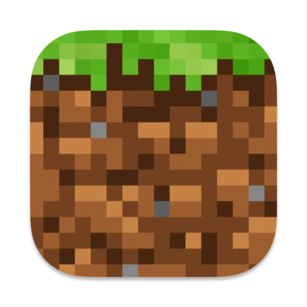

MC 汉化器
翻译任务
连接控制
选择输入源，开始资源本地化
输入资源
＋
尚未选择输入资源
支持 zip / jar / mrpack，以及地图或整合包目录
选择资源
输出位置
更改
翻译偏好
安全时翻译商人 / NPC 标签
仅影响安全可译标签；机制锁定和未知项始终保留。
等待开始
选择输入资源后即可开始
0%
准备 · 扫描 · 翻译与审校 · 写回审计 · 打包
仅扫描预览
开始汉化
扫描文本总数
0
已处理文本组
0
AI 自动通过
0
待复审问题
0
重置任务
最近任务
查看质量摘要
任务详情
进度、内容与问题集中查看
处理日志
扫描预览
问题审阅
0
全部级别
INFO
WARN
ERROR
全部内容
可翻译
机制锁定
待确认
时间
级别
处理内容
连接控制
配置兼容 API、可用模型和稳定请求策略。密钥不会写入日志。
API 地址
API Key
安全记住 API Key
模型
拉取模型
并发数
扩展项
最大 AI 翻译文本组数
应用并关闭
最近任务
还没有任务。请先选择资源。
返回任务
质量摘要
关闭